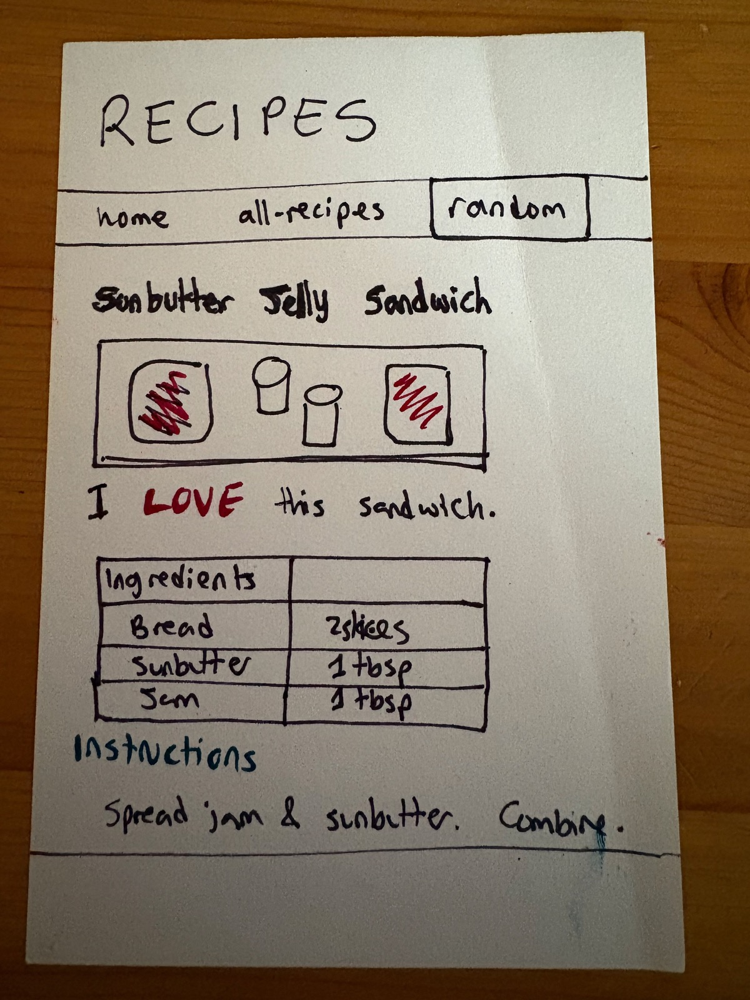
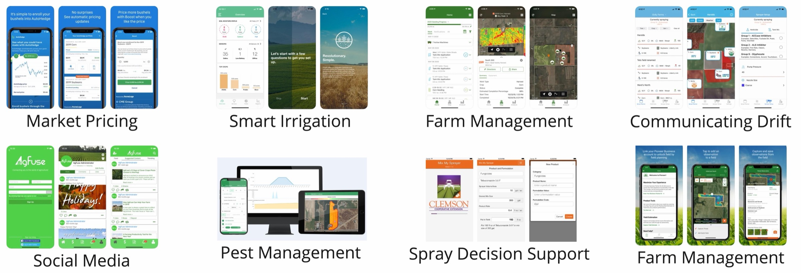
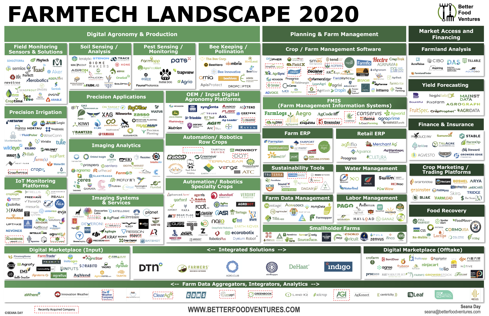

Sunbutter Jelly Sandwich

I LOVE this sandwich.
| Ingredients | |
|---|---|
| Bread | 2 slices |
| Sunbutter | 1 tbsp |
| Jam | 1 tbsp |
Instructions
Spread jam & sunbutter. Combine.
Module 1 - Web Design & Development
Lecture 1.4
ASM 532, Introduction to Ag Informatics
Ankita Raturi, ankita@purdue.edu
20 minutes, paper only. Use your cheatsheet.
Work in pairs. Ask us questions!
Goal: to gut-check how you're coping with the course.

I LOVE this sandwich.
| Ingredients | |
|---|---|
| Bread | 2 slices |
| Sunbutter | 1 tbsp |
| Jam | 1 tbsp |
Spread jam & sunbutter. Combine.
Seventeen requirements. One page. Now let's take it apart.
Set the font once on body. Everything inside inherits it.
CSS — whole page
font-family on body cascades to every element on the page.
margin: 0 removes the browser's default gap — that is what lets the header sit flush
against the edge.
HTML — what it is (R1)
CSS — how it looks (R12)
id in the HTML, # in the CSS. Padding, not margin — the
room goes INSIDE the box.
HTML — what it is (R2)
CSS — how it looks (R13)
Bullets off, direction across. display: flex goes on the
ul — the container, not the items.
HTML — one line carries the hook
CSS — the box (R14)
You invented the name random-box. The . is how CSS asks for
it — and only that one link gets the border.
HTML — structure and content
main holds what is unique to THIS page. One per
page.h2, the level below the banner. Never skip a level.
alt describes what the picture SHOWS, not the
filename.I LOVE this sandwich.
HTML — the hook (R6)
CSS — the look (R15)
span wraps one word and means nothing on its own. Two declarations, because
red and bold are two separate properties.
| Ingredients | |
|---|---|
| Bread | 2 slices |
| Sunbutter | 1 tbsp |
HTML — rows and cells
tr is a row. th is a label cell, td is a data cell.
The top-right cell is empty in the drawing — an empty cell is still a cell, so
<th></th> still gets written out.
Spread jam & sunbutter. Combine.
HTML (R8 + R9)
CSS (R16)
h3, because it sits under the h2 recipe title. You type
&, the browser shows & — a bare & is
reserved.
HTML — empty on purpose (R10)
CSS — gives it a body (R17)
An empty element collapses to zero height. Without min-height there is
nothing to see, however red you paint it.
p.highlight#bannernav ath, tdPunctuation matters:
.class-name: period = reusable class, use many times#id-name: hashtag = unique id, use only oncesel1 sel2: space between selectors = "inside"sel1, sel2 comma between selectors = "and"In PAIRS
What types of software are used or needed in food and agricultural systems?
4 mins starts now.
"No Silver Bullet", Fred Brooks, 1986

https://xkcd.com/1831/, Randall Munroe (CC BY-NC 2.5)
| User Interface | view | HTML, CSS, Javascript |
| Controllers | logic | Javascript, Python |
| Data Access & Model | APIs, database |
Javascript, Python, SQL |
| Environment | web server | Linux, Node, Docker |
| Configurations | hosting, versioning |
Digital Ocean, Github |
| Meta | licenses, docs |
GNU GPL, markdown |


Each pair, tell us what you came up with.
What did we cluster? What's missing?

FarmTech Landscape 2020, Seana Day, Better Food Ventures